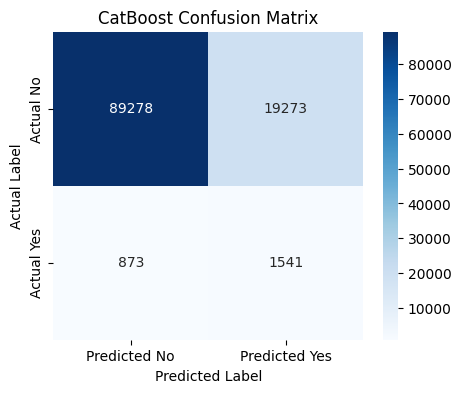

Predicting Neonatal Sepsis with Precision AI.
Every minute counts. Our AI-driven platform analyzes early clinical factors to provide accurate risk assessments for neonatal sepsis at birth.
Built for Clinical Excellence
A complete clinical AI platform — from risk prediction to explainability and digital reporting.
Rapid Assessment
Get results in seconds using only 9 at-birth clinical features available in any neonatal ward.
High Sensitivity
85% target recall ensures life-threatening sepsis cases are never missed during early screening.
Explainable AI
SHAP-powered impact analysis reveals exactly which clinical factors are driving each risk score.
Clinical Reports
Download a professional, print-ready PDF report for any assessment — ready for patient files or EMR systems.
Smart Validation
Real-time physiological range checks flag impossible or unusual values before submission.
Session History
Automatically saves your last 5 assessments locally — review any previous result in one click.
How SepsisPulse Analyzes Risk
A technical walkthrough of our methodology and clinical performance.
Early Feature Extraction
Our model is explicitly trained to exclude post-onset diagnostic signs (like CRP or fever) to focus purely on early-warning clinical markers available at birth.
- Gestational & Maternal Age Analysis
- Apgar Score Performance Mapping
- Birth Weight Risk Stratification
Adaptive Learning (CatBoost)
We utilize the CatBoost Gradient Boosting architecture, specifically configured for medical high-sensitivity scenarios.
Clinical Data Integrity
Trained on the African Neonatal Sepsis Dataset, the model recognizes complex interactions between biological factors and clinical outcomes without the "black box" mystery.
Architectural representation of our neural-boosted decision logic.
Clinical Performance Distribution
Visualizing the model's accuracy on the validation set.
